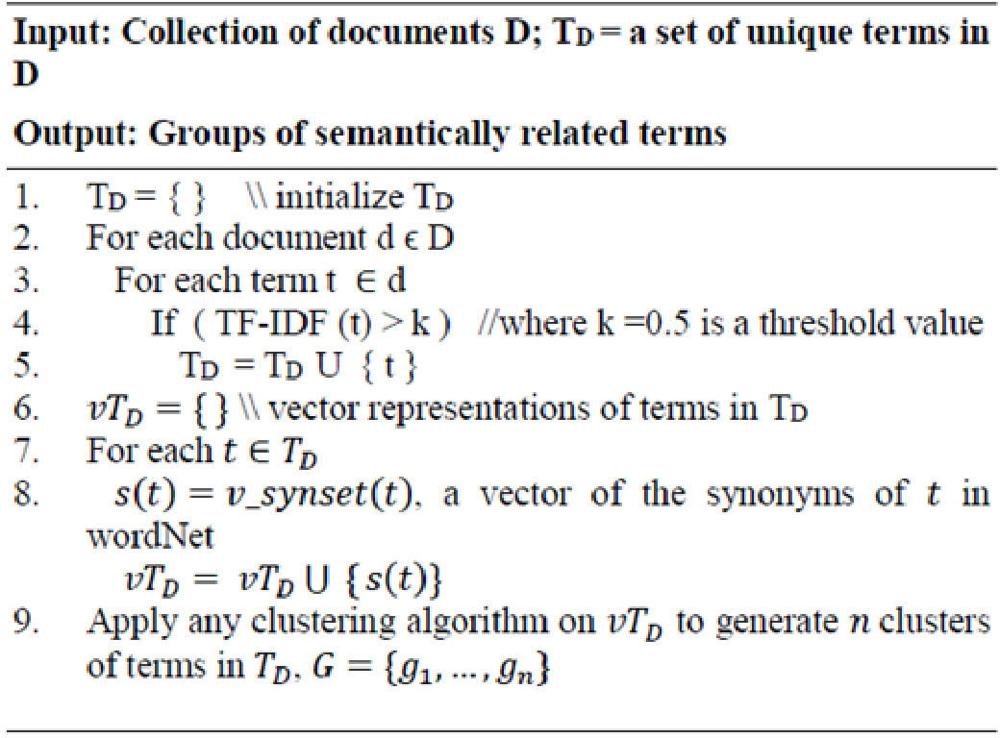
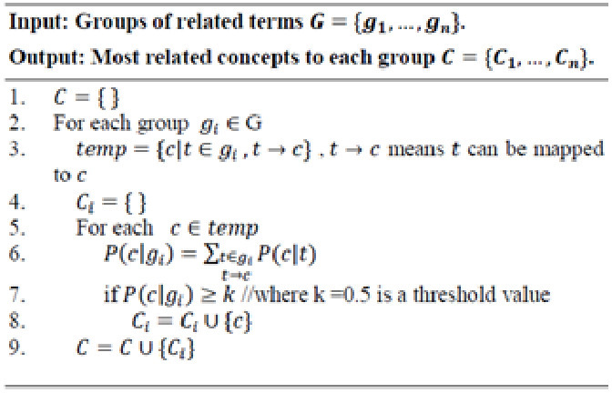

DOI: https://doi.org/10.1145/3184558.3186571
WWW '18: Proceedings of The Web Conference 2018, Lyon,
France, April 2018
Text contents are overloaded with the digitization of the data and new contents are transmitted through many sources by generating a large volume of information, which spreads all over the world through different communication media. Therefore, text data is available everywhere and reading, understanding and analysing the text data has become a main activity in daily routine. With the increment of the volume and the variety of information, organizing and searching, the required information has become vital. Topic modelling is the state of the art for information organization, understanding and extracting the content. Most of the prevailing topic models use the probabilistic approaches and consider the frequency and the co-occurrence to discover the topics from collections of documents. The proposed research aims to address the existing problems of topic modeling by introducing a concept embedded topic model which generates the most relevant and meaningful topics by understanding the content. The research includes approaches to understand the semantic elements from the content, domain identification of concepts and provide most suitable topics without getting the number of topics from the user beforehand. Capturing the semantics of document collections and generating the most related set of topics according to the actual meaning will be the significance of this research.
ACM Reference
Format:
Dakshi T. Kapugama Geeganage. 2018. Concept Embedded
Topic Modeling Technique. In Proceedings of The 2018
Web Conference Companion (WWW'2018 Companion). ACM, New
York, NY, USA, 6 pages. https://doi.org/10.1145/3184558.3186571
Digital information has become an essential element in human activities. Most of the contents available as text data and human beings are overloaded with these text data. The exploration of new information has become a habitat in human lives and people tend to use information in their day today routine. People are too much relying on electronic text than ever before with the interactions with “web, social media, instant messaging to online transactions, government intelligence, and digitized libraries” [1].
Text data is playing a vital role in social media [2] to convey the ideas and messages while large volume of text contents are transmitting through different social media like Facebook, Twitter and Linkedin. For example, tweets are belonging to a variety of topics and it is indeed challenging to extract the meaning of the texts and categorize them into topics [3]. Text data about an organization will be helpful to maintain the sustainability of that organization and most of the customers provide feedbacks and reviews [2] through online media. With the increment of the volume and the variety of information, organizing and searching, the required information has become vital. Most of the time, the quality of the text contents would be a problem and there are so many noisy contents available to mislead the core idea. The factors such as variety, complexity and the volume demoralize the possibility of human intervention for information organization and searching. Among the various approaches of information organization, understanding and extracting the content, topic modelling has become the most popular approach and the state of the art.
Topic models are algorithms [4] to extract the topics (specific word distribution), which are hidden in the unstructured contents of collections of documents. Topic modelling contains the methods for organizing, understanding and summarizing large collections of textual information. Topic modeling allows users to discover the hidden topical patterns and helps them to annotate the documents according to the topics. Finding patterns of words in document collections and suggesting an appropriate topic similar to the human understanding can be defined as complex tasks. It is important to model the topics similar to the human perception by understanding the meaning of the collections of documents. Nevertheless, most of the prevailing topic models use the probabilistic approaches [5-8] to discover the topics by considering the frequency and the co-occurrences. The probabilistic models run according to a generative process that includes hidden variables and contain “a joint probability distribution over both observed and hidden random variables” [4]. Accordingly, the words of the documents and the topic structure will be the main building blocks. Hence, the semantics of the content will not be considered to interpret the topics from the collections of documents. Poor quality text contents may lead to generate meaningless and irrelevant topics. In addition to that, the users are required to define the number of topics before starting the topic modelling process; hence, it automatically creates excess set of meaningless topics from the collections of documents.
The concepts reflect the meanings of the contents and relationships will express in-depth explanations about the concepts. In this research, a concept embedded topic modeling technique will be developed to identify the semantic elements or meaningful terms from collections of documents and ontology driven approach is used to understand the concepts and relationships. Further, the concepts will be categorized according to the domains and list of topics will be determined by the related domains. Domains and concepts will be weighted to interpret the semantic meaning of the contents. A concept layer will be incorporated to generate semantically meaningful topics somewhat similar to human perception and understanding.
The research aims to develop a novel concept embedded topic modelling approach that generates semantically meaningful topic models from collections of documents by considering the semantics of the content. To achieve this aim, the following research questions will be addressed in this work.
Topic modelling is a research area, which suggests suitable topics for a collection of documents after mining the content of the text. Numerous efforts have been made to model the topics using different algorithms and techniques. Probabilistic models have been popular among the topic modeling techniques and the word usage has been taken into consideration. Latent Semantic Analysis (LSA) [5], Probabilistic Latent Semantic Analysis (PLSA) [7] and Latent Dirichlet Allocation (LDA) [8] are the main probabilistic approaches used in topic modeling researches. LSA [5] is a Natural Language Processing (NLP) driven approach to generate a vector-based representation for texts to extract semantics. LSA examines the occurrences of words in sentences, paragraphs or documents and represents the text as a matrix. The frequency of words with the corresponding row in the passage will appear on the cells and LSA assigns “singular value decomposition (SVD) to the matrix” [5]. PLSA [7] was introduced to overcome the prevailing limitations in LSA and PLSA is based on an aspect model that contains latent variables to consider the co-occurrence of texts.
Nevertheless, PLSA has not facilitated to handle at level of documents. LDA [8] is designed for text corpora and content is represented as random mixtures over latent topics. LDA is based on a three-level hierarchical Bayesian model and distribution over words will be described by the topics. There are many researches, which developed the approaches based on probabilistic techniques, and most of the researchers have presented hybrid approaches with LDA.
“Maximum Matched Pattern-based Topic Model (MPBTM)” [9] was developed to generate a pattern-based topic model on document collections and it contains a ranking technique to discover related documents which aligned the topic model. The specialty here in this approach [9] is, it includes the semantic structure from topic modelling and the statistical significance from the most representative patterns. With the popularity of the social media, researches have paid their attention to summarize the contents available in social media. Hash (#) tags were primarily used in Facebook, Instagram and Twitter for searching similar type of topics and contents together. User conversations [10] related to the Twitter feeds have been considered in topic modelling and Twitter replies belong to same user were combined to create a single document. Topic models were trained using LDA and the Author-Topic Model (ATM) on contents that were previously pooled. The assumption of coherence between user-to-user interaction and related topics was used to extract most relevant topic. LDA and author-topic model [11] were used to extract the topics in Twitter and the Author-Topic Model has been implemented with some improvements to LDA.
Some researchers have used different taxonomies and represented as fixed ontology [3] by considering the structure to store the knowledge about the topics of their interest. Ontology was used as an effective knowledge representation technique to grab the semantics of frequently discussed topics on Twitter. After recognizing the importance of semantics in topic modeling, Yang et al.[3] considered other sources of information for integrative topic inference such as “embedded URL, #hashtag, @mention, named entities, interacting users and other context information” during the ontology modelling. Asfari et al.[12] focused to model users' interests when extracting topics from their tweets. They have combined the LDA to extract topics from tweets with a taxonomy (in this case, ODP) as an external knowledge source. The research was focused on meanings of the words to discover the high-level topics published in the Twitter and extracted users’ topics of interest by examining the terms they mentioned in users’ tweets. Tang et al.[13] presented a four layer topic modeling approach by embedding a concept layer into the traditional topic model and accordingly topic is considered as set of concepts. “Conceptualization LDA” (CLDA) was introduced as an extension to the LDA by embedding the set of concepts. Probase[15] was used as the concept knowledge base to derive the concepts from the collections of documents. While Tang et al. [13] tried to embed the concept layer inside the topic model, Chemudugunta et al.[14] demonstrated a probabilistic approach which uses hybrid techniques of semantic knowledge and topics based on the data. ontology and LDA were combined together to mine the topics from collections of documents by considering there is a strong relationship among ontology concepts and set of topics.
The following problems were highlighted after an extensive study about literature.
LSA, PLSA and LDA are the main probabilistic topic models and many researches were conducted based on one of these models or combining some of the techniques. LDA is the most popular and improved topic model, accordingly documents are considered as probability distribution over topics. Word frequency and co-occurrence were considered as the major facts during the topic modelling process and set of topics were generated accordingly. Human perceives the content by understanding the meaning but the probabilistic topic models do not focus on the semantics or the meaning of the content instead of the word counts. Hence meaningless topics will be generated without grasping the semantics of the content.
Number of topics should be specified before starting the topic modelling process in LDA and due to that less relevant and meaningless topics will be generated. Since the topic model needs to generate the specified number of topics, it will prioritize to output the requested number of topics rather than the relevancy and appropriateness.
Some of the researches were conducted to address the issue of neglecting the semantic meaning of the content by combining ontology driven approaches. Most of the approaches use an external ontology or WordNet and attempted to check the meanings of the words given in the content. Single words were mapped instead of considering the concepts and associated relationships. Therefore, it was not possible to highlight the prominent concepts, which need to be a topic.
Most of the ontology based approaches are not smart enough to handle the new concepts which are not given in the ontology due to the poor learning process. Same time Topic modeling approaches consider collections of documents as the input but most of the ontology modeling approaches with acceptable accuracy were capable enough to process only a single document or a paragraph to grasp the semantic meaning.
The proposed research will generate a novel topic modelling approach which prioritizes the semantic concepts and tries to grasp the semantic meaning of the content by overcoming the limitation of “generating meaningless topics” in prevailing topic modelling approaches. Therefore Probase[15] will be used to interpret the identified concepts and relationships, since it contains “5,376,526 unique concepts, 12,501,527 unique instances, and 85,101,174 IsA relations”[15]. Reuters Corpus Volume I (RCV1)[16] will be used as the text dataset for generating topic models, which is popularly used in text mining research area. The research contains three phases and high-level architecture of the research is elaborated in Fig. 1.
Phase 1: Semantic elements extraction from collections of documents
The aim of the phase 1 is to identify the semantically meaningful elements from collections of documents and as the first step, content is pre-processed to eliminate the unnecessary language elements and constructs. A novel algorithm is introduced to derive the groups of semantically related concepts and a lexical data base has been used to discover the related words together. WordNet synonyms (sysnsets) have been applied to generate the groups of semantically related terms. First, important terms are filtered using the tf.idf (term frequency * inverse document frequency) and WordNet is used to find the related and similar meaning words of the identified terms from collections of documents. Then all the related words are grouped together and cluster to derive the groups of semantically related terms. Then groups of semantically relevant terms are interpreted in terms of concepts. Probase [15] is used to interpret the concepts in more meaningful manner. For each document, the concepts will be identified while some concepts will be annotated as prominent concepts based on their relationships. Finally, set of concepts will be generated as the sematic elements at the end of this phase.
Algorithm 1A. generates groups of semantically related terms.
|  |
The terms in each cluster in G are considered as semantically related because they are grouped together based on their synonyms and each cluster represents some concept. The next step is to annotate each cluster with concepts in Probase. A simple way to annotate the clusters is to map the terms in each cluster to the concepts and the most relevant concepts to a cluster will be used to annotate that cluster. A simple algorithm is given in Algorithm 1B. In step 5, (c|t) represents the strength of the mapping t→c provided in Probase.
|  |
Phase 2: Concept categorisation and domain clustering
The groups of concepts generated in the phase-1 will be further processed to determine the domain of each identified concept. A new algorithm will be presented to identify the domain of each concept and concepts will be categorized according to the domain. Finally, the collection of documents may contain set of identified domains and the concepts and the relationships associated with each domain. The result will contain list of domains, which can be found in the certain document collection. The list of domains will be further processed to identify the most relevant set of domains for the given document collection. A fuzzy based clustering mechanism will be applied to find the number of important domains with respect to the concepts and relationships.
Phase 3: Generate a concept embedded topic modelling technique
A novel algorithm will be introduced to weight the words, concepts and domains according to the phase-1 and phase-2 outcomes. A concept layer will be formulated to express the relationship and association among the words, concepts and domains. The main research finding of this phase is the concept embedded topic modelling approach and a topic model will be generated based on the domains and concepts associated with the collection of documents. Finally, semantically meaningful topics will be derived based on the concept embedded topic modeling technique and the most relevant topics will be generated. In most of the existing topic models, user need to provide the number of topics beforehand and due to that meaningless topics and less relevant topics will be generated. Nevertheless, specialty here in this research is, most related set of topics will be generated based on the relevance to the collections of documents instead of focusing the number of topics to be generated.
This research focuses on developing a concept embedded topic modeling technique and the action research methodology will be used as the research paradigm. Following set of novel algorithms will be introduced during each phase in the research study.
Algorithms and concept embedded topic modelling approach are implemented using python programming language. The research will be endowed with the innovations of text mining, ontology modeling, clustering and topic modeling techniques.
Each algorithm will be tested to ensure the accuracy of the results and effectiveness of the algorithm. Finally, the concept embedded topic modeling technique will be evaluated using Reuters Corpus Volume I (RCV1)[16] dataset which is a typical dataset in text categorization. Further, accuracy, precision and recall will be used as the evaluation matrix to evaluate the concept embedded topic modeling technique.
Algorithm 1.A and 1.B have been implemented and applied on RCV1 dataset. 10 groups of semantically related terms and the most related concepts are generated as the output of the algorithm 1.A and 1.B. The result is shown in the Table 1.
| Group | Groups of related terms | Related concepts |
|---|---|---|
| G1 | {news, word, intelligence} | {Information, topic, factor} |
| G2 | {money} | {resource, valuable, item} |
| G3 | {risk, danger, chance, gamble} | {factor, topic, concept} |
| G4 | {government, authority, administration, politic} | {organization, area, topic} |
| G5 | {security, protection} | {issue, service, factor} |
| G6 | {group} | {group, feature, object} |
| G7 | {people} | {object, resource, entity} |
| G8 | {commonwealth, state, country, united states} | {entity, country, nation} |
| G9 | {law, police} | {profession, institution, area} |
| G10 | {human, public, global, world, man, earth, worldwide} | {topic, concept, specie} |
It is noted that the algorithms have grouped the related terms and mapped the most related concepts by considering the semantics of the content.
Text data plays a major role in World Wide Web, social media, e-commerce and digital libraries. Large volume of text contents available and there is a vital requirement to understand them accurately. The flow of the information may vary and text data will be transmitted from any part of the world with the interaction of the web. Hence it is difficult to rely on the quality of the contents. Large volume of poor quality text data is transmitting in social medias and it is important to understand and categorize them into relevant topics. Customer reviews and user recommendations play a significant role in e-commerce and most of the companies collect the reviews through online medias. Understanding, analysing and classifying the feedbacks is beneficial for both organizations and users. Topic modeling is the state of the art of organizing, understanding and summarizing the large collections of textual information. Nevertheless, most of the prevailing topic modelling techniques are based on probabilistic methods and the frequency, co-occurrence of the words will be considered. Further the number of possible topics should be specified beforehand to the topic modelling process. This hinders the process of finding most suitable and semantically meaningful topics from the collection of documents.
The proposed research is aiming to address the existing issues and planning to introduce a concept embedded topic model which generates the most suitable topics by understanding the content from the collections of documents.
The research includes approaches to understand the semantic elements from the content, domain identification of concepts and provide most suitable topics without getting the number of topics from the user beforehand. The outcomes of the research will boost up the capabilities of topic modelling by understanding the semantics of the documents rather than the word counts given in the collection and furthermore it will remove the meaningless and irrelevant topics from the topics list somewhat similar to the human perception.
This paper is published under the Creative Commons Attribution 4.0 International (CC-BY 4.0) license. Authors reserve their rights to disseminate the work on their personal and corporate Web sites with the appropriate attribution.
WWW '18, April 23-27, 2018, Lyon, France
© 2018 IW3C2 (International World Wide Web Conference
Committee), published under Creative Commons CC BY 4.0
License. ACM ISBN 978-1-4503-5640-4/18/04.
DOI: https://doi.org/10.1145/3184558.3186571